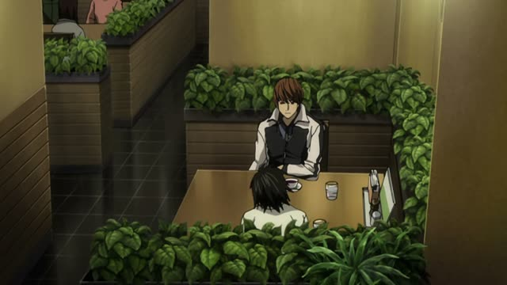
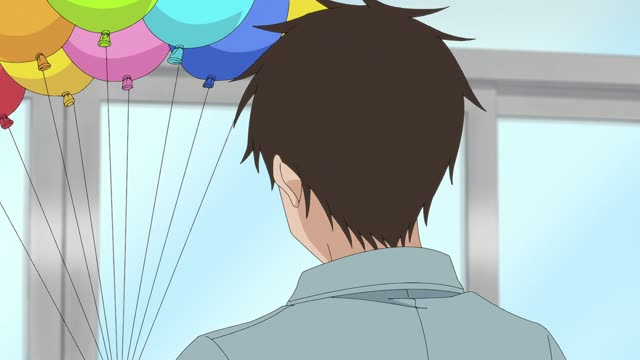
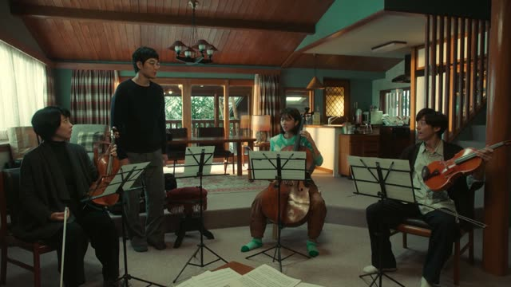
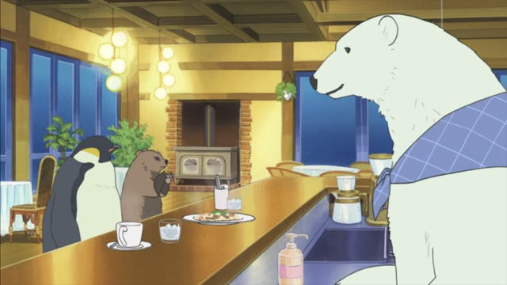
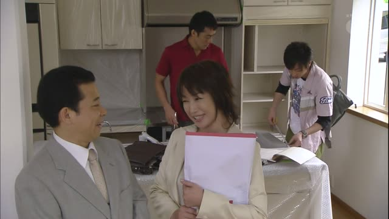
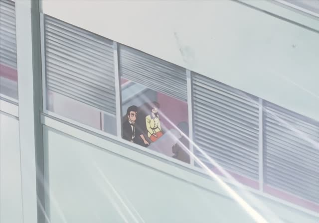
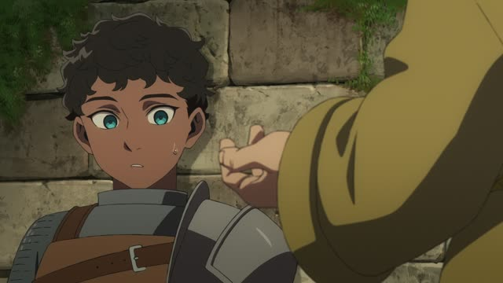
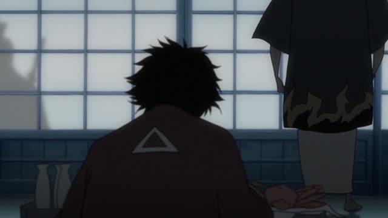

いただく・～ていただく
| Polite | ～ていただきます・～ていただきました |
|---|---|
| Casual | ～ていただく・～ていただいた |
Same meaning: "I receive it, I have someone do it (humble)". The polite version adds ます.

Death Note · Episode 10
良いところを教えていただきました。
"Thank you for showing me a nice place."
いただく is the humble もらう: you receive something from someone above you. ～ていただく = have someone do something for you. 教えてもらった → 教えていただいた.
On this card, L thanks Light for bringing him to a café where nobody can hear them. ました makes it polite.
The meal greeting いただきます is the same word: "I humbly receive".

Kotaro Lives Alone · Episode 3
１つ頂こう。
"I shall take one."
On this card, Kotaro asks for a balloon in his old-samurai way. 頂こう: "I'll receive one", grand and funny from a small kid.
Quick Examples
Before eating.
いただきます。
"Thank you for the food."
The everyday one.
PoliteThanking a customer.
来ていただいて、ありがとうございます。
"Thank you for coming."
PoliteTalking about a gift.
先生に本をいただいた。
"I got a book from my teacher."
CasualAt work.
部長に説明していただきました。
"The manager kindly explained it to me."
PoliteWith and without
先生に教えてもらった。
"My teacher taught me." Plain.
先生に教えていただいた。
"My teacher kindly taught me." Humble and grateful.
Examples from Media

Quartet · Episode 1
お隣の方にいただいたんです。
"I got it from the neighbor."
The corn tea.

Shirokuma Cafe · Episode 49
キノコ大好きです。いただきます。
"I love mushrooms. Thank you!"
Last Samurai Standing · Episode 1
お集まりいただき、ありがとうございます。
"Thank you all for gathering here."
お～いただく: very formal.

Kekkon Dekinai Otoko · Episode 1
マネジメントさせていただきますので
"We'll be handling the management"
させていただく: very polite "I'll do it".

Oishinbo · Episode 28
はい、じゃあいただきます。
"Okay, then, I'll have some."

Dungeon Meshi · Episode 14
蘇生料を頂く。
"I'll take the revival fee."

Samurai Champloo · Episode 3
そして今度は、この町を頂きに来たってわけだ。
"And now they've come to take this town."
Here いただく means "take" with a smirk.